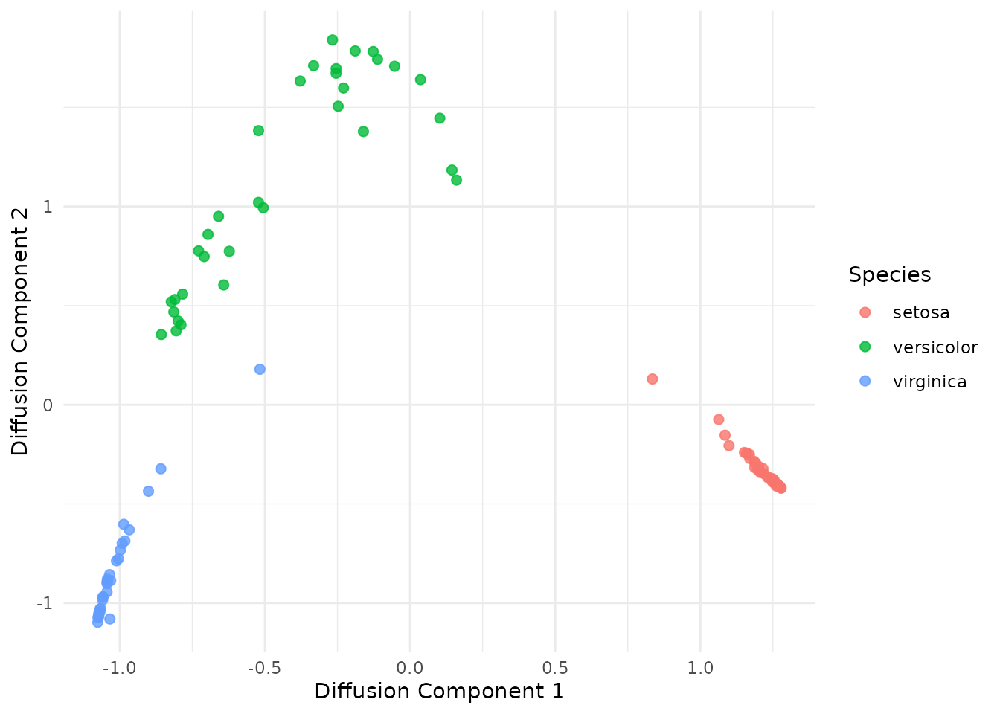
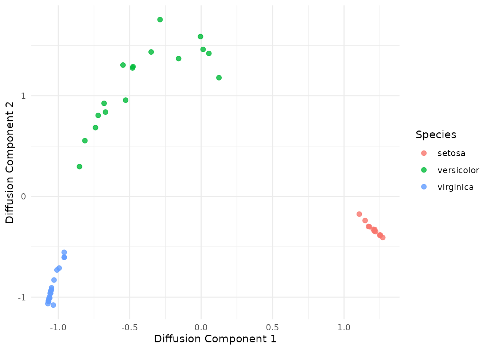
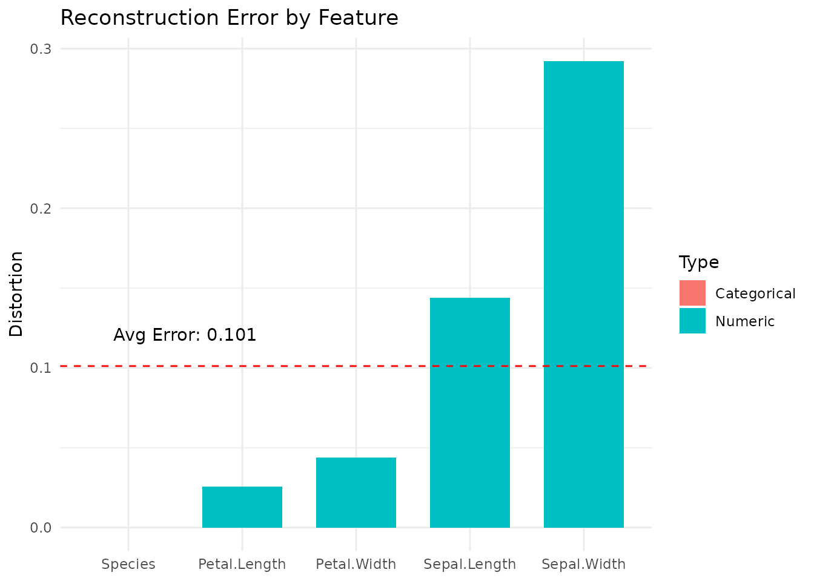

Autoencoding Random Forests (RFAE) provide a framework for dimensionality reduction and data reconstruction using the leaf-node connectivity of Random Forests. This vignette demonstrates the three-step pipeline:
Training a base Random Forest (RF).
Encoding data into low-dimensional embeddings.
Decoding those embeddings back into the original input space.
Rather than being trained end-to-end, the RFAE algorithm is more like a post-processing procedure on a trained Random Forest (RF), so first we need to train a RF.
Unlike standard autoencoders, RFAE is essentially a post-processing procedure applied to a pre-trained Random Forest - so first, we need to train a RF.
Given a dataset of interest, you must decide whether to train the Random Forest (RF) in a supervised or unsupervised manner.
Supervised Learning: Uses a target class label to guide tree splits (default in ranger). Subsequently, this label will be excluded from the subsequent encoding/decoding steps.
Unsupervised Learning: Uses variants like Adversarial Random Forests (ARF) (Watson et al., 2023) or Unsupervised RFs (URF) (Shi & Horvath, 2006), or others. These allow the model to learn the data’s structure without a target label. For example, an ARF learns the data distribution by training the model to distinguish between real observations and synthetically generated dummy data in an adversarial manner.
RFAE is compatible with ranger-like objects. It can be implemented
using either the standard ranger package for supervised
models or the adversarial_rf function from the arf package
for unsupervised applications. You can also build other variants from
ranger; please refer to their documentation
for more details.
# Load libraries
library(RFAE)
library(data.table)
library(ggplot2)
library(arf)
library(ranger)
set.seed(42)
# Train-test split
trn <- sample(1:nrow(iris), 100)
tst <- setdiff(1:nrow(iris), trn)
# Train a RF and an ARF
rf <- ranger(Species ~., data = iris[trn, ], num.trees=50)
arf <- adversarial_rf(iris[trn, ], num_trees = 50, parallel = FALSE)
#> Iteration: 0, Accuracy: 80.5%
#> Iteration: 1, Accuracy: 39%We can speed up computations by registering a parallel backend, which
can be used by ranger and arf, as well as the
later functions in the pipeline. The default behavior of all functions
is to compute in parallel, if possible, so it is advised to do so. How
this is done varies across operating systems.
# Register cores - Unix
library(doParallel)
registerDoParallel(cores = 2)Windows requires a different setup.
# Register cores - Windows
library(doParallel)
cl <- makeCluster(2)
registerDoParallel(cl)In either case, we can now execute in parallel.
# Rerun in parallel
arf <- adversarial_rf(iris[trn, ], num_trees=50)
#> Iteration: 0, Accuracy: 82.5%
#> Iteration: 1, Accuracy: 34%
#> Warning: executing %dopar% sequentially: no parallel backend registered
rf <- ranger(Species ~., iris[trn, ], num.trees=50)The result of either functions is an object of class
ranger, which we can input into the autoencoding
pipeline.
The next step is to train the model to encode the data, using
encode. This function first computes the adjacency matrix
between training samples implied by the rf. Samples are
considered similar if they are routed into the same leaves often
throughout the forest.
The encode function requires a ranger
object, the training data x and a parameter k
for the dimensionality of the embeddings. You can also set
stepsize, an integer which controls the number of time
steps in the diffusion process, and governs whether you want local or
global connectivity captured in your embedding. The default value is 1,
which gives the most local connectivity; increasing this allows the
information captured by the embeddings to be more global (see here for more
details .
The function outputs a list of length 8, containing Z, a
k-dimensional non-linear embedding of x
implied by rf; A, the adjacency matrix; and
other information from the encoding process to aid with later steps.
For large datasets, this function can be very computationally expensive, as it requires at least space for the adjacency matrix, where is the sample size.
# One encoding for each type of RF
# We choose k=2 to allow visualisation
emap_arf <- encode(arf, iris[trn, ], k=2)
emap_rf <- encode(rf, iris[trn, ], k=2)
# Print out first five rows of embeddings
# The first five rows of x
iris[trn, ][1:5, ]
#> Sepal.Length Sepal.Width Petal.Length Petal.Width Species
#> 49 5.3 3.7 1.5 0.2 setosa
#> 65 5.6 2.9 3.6 1.3 versicolor
#> 74 6.1 2.8 4.7 1.2 versicolor
#> 146 6.7 3.0 5.2 2.3 virginica
#> 122 5.6 2.8 4.9 2.0 virginica
# The first five embedded samples for ARF
emap_arf$Z[1:5, ]
#> [,1] [,2]
#> [1,] 1.2704512 -0.4084505
#> [2,] -0.1889004 1.7847433
#> [3,] -0.6598193 0.9501371
#> [4,] -1.0590509 -0.9845285
#> [5,] -0.9011168 -0.4363258
# The first five embedded samples for RF
emap_rf$Z[1:5, ]
#> [,1] [,2]
#> [1,] 1.3036159 -0.01481178
#> [2,] -0.7523194 1.18412051
#> [3,] -0.7525884 1.18012453
#> [4,] -0.7822414 -1.34539845
#> [5,] -0.7810238 -1.23921453We find a slightly different set of embeddings due to the introduction of the Species column into the training stage of the ARF.
Moving forward in the vignette, we will only use the
emap_arf encodings for the pipeline to avoid repeating. In
practice, the user should decide whether they want to have supervised
embeddings (which may be more useful in feature engineering for
classification/regression) or unsupervised (which may be more useful in
data analysis).
# Plot the embedded training data
tmp <- data.frame(
dim1 = emap_arf$Z[, 1],
dim2 = emap_arf$Z[, 2],
class = iris[trn, ]$Species
)
ggplot(tmp, aes(x = dim1, y = dim2, color = class)) +
geom_point(size = 2, alpha = 0.8) +
theme_minimal() +
labs(
x = "Diffusion Component 1",
y = "Diffusion Component 2",
color = "Species"
)
As we expect, the iris data is fairly well separated
with two components. These encodings by themselves can be used for
feature engineering, compression, or clustering, as well as denoising
and batch correction - see Vu
et al., 2025 for more details.
In addition to the embeddings, encode generates an
adjacency matrix A, which captures the similarity between
training samples as learned by the RF. This is a doubly-stochastic (rows
and columns sum to 1) and positive semi-definite matrix. This matrix
describes the Random Forest kernel, and can be considered a
data-adaptive kernel which works for mixed-type tabular data, and we can
consider it for any kernel method.
A <- emap_arf$A
A[1:5, 1:5]
#> 5 x 5 sparse Matrix of class "dgCMatrix"
#>
#> [1,] 0.1437159 . . . .
#> [2,] . 0.23773016 . . 0.009523810
#> [3,] . . 0.212240882 0.001295716 0.002724287
#> [4,] . . 0.001295716 0.094183542 0.014440392
#> [5,] . 0.00952381 0.002724287 0.014440392 0.193416583With our learned embeddings, which are contained in the
emap object, we can also project new data onto the
principal components, using predict. Internally, the
function passes the testing data through the RF, which is passed as an
argument, computes the adjacency matrix between training and testing
samples, then projects data using the Nyst"om formula, and returns an
embedding matrix of size $n_{test} k $.
# Project testing data
emb <- predict(emap_arf, arf, iris[tst, ])
# Plot test embeddings
tmp <- data.frame(
dim1 = emb[, 1],
dim2 = emb[, 2],
class = iris[tst, ]$Species
)
ggplot(tmp, aes(x = dim1, y = dim2, color = class)) +
geom_point(size = 2, alpha = 0.8) +
theme_minimal() +
labs(
x = "Diffusion Component 1",
y = "Diffusion Component 2",
color = "Species"
)
# Decoding StageAfter finding the embeddings, we can now use decode_knn
to decode them back to the original input space. Given a test embedding,
function works by first finding the k-nearest neighbors
(kNN) in the embedding space. Then, these samples are reconstructed
using the leaf bounds of the original RF, following the eForest approach
described in Feng &
Zhou, 2018. Finally, the sample is reconstructed by taking a
weighted average of the k-nearest training samples.
The decode_knn function requires 3 arguments: the
original rf object used in training, the z
matrix of embedded data and the emap object outputted via
encode. Optional arguments include x_tilde,
which is NULL by default to tell the function to use the
eForest approach, but the exact training data can otherwise be supplied;
the k parameter for the kNN approach (default k=5), and a
parallel flag which is enabled by default.
The function then returns a list consisting of two data frames:
x_hat, which is the reconstructed data frame, and
x_tilde, the training samples rebuilt for the decoding
process.
# Decode data
out <- decode_knn(arf, emap_arf, emb)
# Reconstructed testing data
out$x_hat[1:5, ]
#> Sepal.Length Sepal.Width Petal.Length Petal.Width Species
#> 1 5.1 3.6 1.4 0.2 setosa
#> 2 5.1 3.5 1.4 0.2 setosa
#> 3 4.9 3.1 1.5 0.2 setosa
#> 4 4.9 3.1 1.5 0.2 setosa
#> 5 5.3 3.7 1.5 0.4 setosa
# Original testing data
iris[tst, ][1:5, ]
#> Sepal.Length Sepal.Width Petal.Length Petal.Width Species
#> 7 4.6 3.4 1.4 0.3 setosa
#> 11 5.4 3.7 1.5 0.2 setosa
#> 12 4.8 3.4 1.6 0.2 setosa
#> 14 4.3 3.0 1.1 0.1 setosa
#> 19 5.7 3.8 1.7 0.3 setosaThe reconstructed data in this case is highly similar to the original
data on inspection. decode_knn’s post-processing also
coerces x_hat to match the format of the original (i.e.,
same number of decimal points and same column ordering).
Of course, beyond inspection, there should be a principled way in which we can evaluate the quality of reconstructed data. Most existing methods for autoencoding (and by extension evaluating) are built for numerical data, so they do not handle mixed-type tabular data in a sensible way - you can one-hot encode data, but what exactly does that mean in terms of column to column ?
We provide this in the form of reconstruction_error,
which takes first the Xhat data frame of reconstructed
data, and second the original X. Note that while
decode_knn outputs columns in the correct order, this is
not actually necessary for reconstruction_error. The
function calculates prediction error for categorical features, and
1-
for numerical features, both of which are between 0 and 1.
The function then returns a list of 5 elements, with entries for (1) errors for numerical features; (2) errors for categorical features; (3) average numerical error; (4) average categorical error; and (5) the overall average error.
errors <- reconstruction_error(out$x_hat, iris[tst, ])
# Error in numerical features
errors$num_error
#> $Sepal.Length
#> [1] 0.1440597
#>
#> $Sepal.Width
#> [1] 0.2922436
#>
#> $Petal.Length
#> [1] 0.02562121
#>
#> $Petal.Width
#> [1] 0.04385683
# Error in categorical features
errors$cat_error
#> $Species
#> [1] 0
# Average numerical error
errors$num_avg
#> [1] 0.1264454
# Average categorical error
errors$cat_avg
#> [1] 0
# Overall error
errors$ovr_error
#> [1] 0.1011563
# Plotting the errors by each feature
error_df <- data.frame(
Variable = c(names(errors$num_error), names(errors$cat_error)),
Error = c(unlist(errors$num_error), unlist(errors$cat_error)),
Type = c(rep("Numeric", length(errors$num_error)),
rep("Categorical", length(errors$cat_error)))
)
ggplot(error_df, aes(x = reorder(Variable, Error), y = Error, fill = Type)) +
geom_bar(stat = "identity", width = 0.7) +
geom_hline(aes(yintercept = errors$ovr_error),
linetype = "dashed", color = "red") +
annotate("text", x = 1.5, y = errors$ovr_error + 0.02,
label = paste("Avg Error:", round(errors$ovr_error, 3))) +
theme_minimal() +
labs(
title = "Reconstruction Error by Feature",
x = NULL,
y = "Distortion"
)